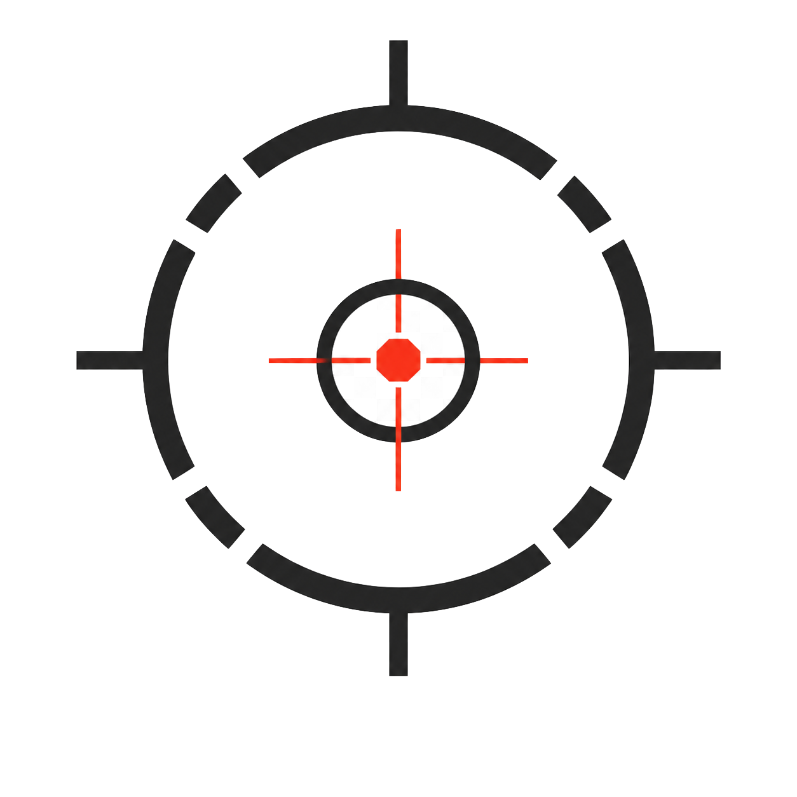

載入模型中...
場景檔：
action.glb
Alive : 0 You killed: 0 Global killed: Loading Visitors : Loading Average staying time: -- Time you stay: 00:00 Something you should know is watching does not make you neutral
